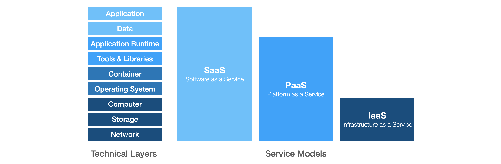

Introduction to Cloud Computing¶
Definiton¶
NIST Definition of Cloud Computing 1
Cloud computing is a model for enabling ubiquitous, convenient, on-demand network access to a shared pool of configurable computing resources (e.g., networks, servers, storage, applications, and services) that can be rapidly provisioned and released with minimal management effort or service provider interaction.
The NIST cloud model is composed of five essential characteristics:
- On-demand self-service
- Broad network access
- Resource pooling
- Rapid elasticity
- Measured service
Service Models

Software as a Service (SaaS) is a service model where applications running on a cloud infrastructure are offered to the customers. The customer itself does not need to manage or control underlying infrastructure such as network, storage, operating systems or servers. However, some limited user configuration of the application are might be possible. In general the applications are accessed by the user using a thin client (e.g. web browser).
Examples: Slack, Microsoft365, Dropbox, Zoom
Platform as a Service (PaaS) is a service model which offers an environment to deploy and operate customer-created application on a cloud infrastructure. The applications can be developed using programming languages, tools and libraries which are supported by the provider. As for SaaS, the customer does not need to manage or control the underlying infrastructure himself.
Examples: OpenShift, Azure Kubernetes Service (AKS), Heroku
Infrastructure as a Service (IaaS) is a service model where a customer can provision fundamental computing resources as well as storage and networks. The customer has full control of the software (i.e. applications and operating system) on the system, whereas the underlying cloud infrastructure remains controlled and managed by the provider.
Examples: Google Compute Engine (GCE), Amazon Web Services (AWS), Microsoft Azure
Deployment Models
Public Cloud. The cloud infrastructure offered by third-party providers (e.g. Microsoft Azure, Amazon Web Services, Google Cloud, Alibaba Cloud) to be used by the general public.
Private Cloud. The cloud infrastructure is dedicated to a single organization and the provisioned resources are only shared within the business units of that organization. The infrastructure is often owned by the organization and deployed on-premise.
Hybrid Cloud is a combination of the previously introduced deployment models. The private and public cloud's resource are still independent from each other, however the services are connected which enables the portability of data and applications.